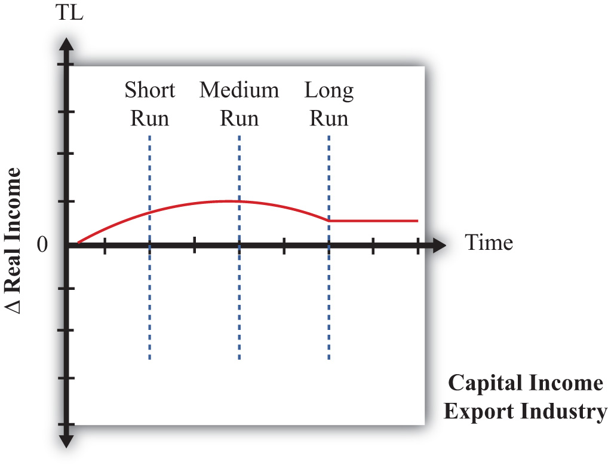

A number of trade models demonstrate that movements to free trade will cause a redistribution of income. The immobile factor model concludes that income will be redistributed from workers in the import-competing industry to workers in the export industry. The specific factor (SF) model concludes that owners of capital in the export sector will gain at the expense of capital owners in the import-competing sector and that the effects on workers in both industries are ambiguous. The Heckscher-Ohlin (H-O) model demonstrates that income will be redistributed from owners of a country’s scarce factor, who will lose, to owners of a country’s abundant factor, who will gain.
One of the key distinctions between these models is the degree of factor mobility. The immobile factor model represents one extreme, in which factors are stuck in one industry and cannot move between sectors. The H-O model represents another extreme, in which factors can move freely and costlessly between sectors. The SF model represents an intermediate special case in which one factor is completely immobile and the other is completely mobile.
As was discussed in detail in Chapter 4 "Factor Mobility and Income Redistribution", Section 4.2 "Domestic Factor Mobility", different factors of production will likely have different degrees of mobility. Some factors are easily adaptable to other industries. For example, accountants are needed in all businesses, and trucks can be used to transport tomatoes or software. Other factors are so specialized that they cannot be easily adapted for use in other industries. Machinery is often carefully designed for a particular production process and cannot be applied elsewhere.
However, the adaptability of any productive factor is likely to change over time, with mobility rising the longer the amount of time that elapses (see Chapter 4 "Factor Mobility and Income Redistribution", Section 4.3 "Time and Factor Mobility"). Thus, if a country were to suddenly liberalize trade, in the very short run—perhaps up to a few weeks—most of the productive factors would not adjust to the change in prices. This is the situation reflected in the immobile factor model. After a few months or more, the most adaptable factors of production would begin to move from the import-competing sectors to the export sectors, while the least adaptable factors would remain stuck in their respective industries. This situation is characterized by the SF model, in which one factor is freely mobile but the other is immobile. Finally, in the very long run—perhaps after several years or more—we might expect all factors to have adapted to the changed economic conditions, either by moving to another industry or by moving out of productive activity, as with retired workers and capital equipment. This situation is depicted in the H-O model.
Thus, by piecing together the results of these models, we can evaluate how income redistribution is likely to change dynamically over time in response to any shock to the system, such as a movement toward trade liberalization or free trade.
Consider a country that produces two goods, which we simply label the import good and the export good, respectively. Production of these two goods requires two factors of production, capital and labor. Assume that the country in question is capital abundant vis-à-vis its trading partner and that the export good is capital intensive relative to the import good. In general, we maintain all the assumptions of the H-O model, with one exception: we will assume that in the short run, capital and labor are completely immobile between industries; in the medium run, labor is freely mobile but capital remains immobile; and in the long run, both labor and capital are freely and costlessly mobile between industries.
We will consider the effects of trade liberalization, although any change that affects the relative prices of the goods can be expected to stimulate similar dynamic effects. Trade liberalization, which in the extreme would be a movement from autarky to free trade, would raise the price of the country’s export good and lower the price of its import good. The change in prices sets off the following effects.
The immobile factor model, beginning in Chapter 4 "Factor Mobility and Income Redistribution", Section 4.4 "Immobile Factor Model Overview and Assumptions", was based on a variation of the Ricardian model. As such, the model assumed only one factor of production and different production technologies across countries. The results from that model do carry over into this two-factor, identical technology context, however.
First, consider the transition to the change in output prices. When the price of the export good rises, firms in the export industry will begin to collect more revenue from sales of their product. Initially, firm profit will begin to rise since the wage rate and rental rate on capital remains fixed. The increase in profit will stimulate the desire to expand production, but production cannot expand by drawing factors from the other industry due to the immobility of factors. Instead, profit-seeking firms within the industry will begin to compete for the capital and labor already in the industry. (Immobility of factors across industries does not mean that factors cannot move between firms within the industry. Recall also that the assumption of perfect competition implies that there are many, many firms operating within an industry.)
Each export firm now has the incentive to lure workers and capital away from other export firms so that it can expand its own production and raise its share of the industry profit. However, the only way to entice factor mobility within the industry is to offer a higher wage and a higher rent. Some factors may now move to other firms, while others may simply negotiate a higher payment from their present employer to induce them to stay. This bidding war will raise both the wage rate and the rental rate to factors employed within the export industry. The bidding war will end once the total factor cost to each firm is equal to revenue and the profit is driven to zero.
In the import industry, firms now face a lower price and hence a lower revenue. Profits will become negative for all firms in the industry. The firms’ only options to cut their losses are to contract by laying off workers or to lower the payments to the workers and capital owners. We will assume, for simplicity, that full employment prevails. However, we could easily imagine the bargaining strategy of the firm managers with the workers: “Either we lower your wages or we eliminate your job.” Given that factors are assumed to be immobile across industries, there is no hope, at least in the short run, of finding another job. If you are laid off, you could find alternative employment in another firm, but it would only hire you at a lower wage. The assumption of full employment, then, really just means that the price system in the market responds to the excess supply of workers and capital in this industry by lowering factor prices until all the factors are fully employed. Therefore, wages and rents will fall in the import-competing industry until profit in the industry rises to zero and losses are eliminated.
Although it is more difficult to explain intuitively, the real returns to factors in the export industry will rise, while the real returns to factors in the import-competing industry will fall. This means that workers and capital owners in the export industry will have greater purchasing power after trade liberalization, while workers and capitalists in the import-competing industry will be able to buy less.
The final short-run effects are summarized in Figure 5.16 "Short-Run Factor Income Effects of Trade Liberalization". Both workers and capitalists affiliated with the export industry will benefit from trade liberalization, while workers and capitalists affiliated with the import-competing sector will lose from free trade. Note that income redistribution, at least initially, is based on industry affiliation. What determines who wins and who loses is the industry from which you receive your income.
Figure 5.16 Short-Run Factor Income Effects of Trade Liberalization

The SF model is based on a variation of the H-O model. It assumes that one factor, labor, is freely mobile between the two industries, while the second factor, capital, is completely immobile between industries. Although it is unlikely that one factor would move completely before another begins to adjust, the SF model nonetheless is an easily representable intermediate position between the short-run and long-run effects.
First, consider the transition to equilibrium in the SF model. After the final adjustment depicted in the immobile factor model, the wage rate paid to workers in the export industry is higher than the wage paid in the import-competing industry. In the next step of the transition, workers (assumed to be the more readily mobile factor) in the import-competing industry begin to seek ways to obtain a higher wage. This might require additional education or training, or it may require workers to move to another geographical area. In any case, the transition takes time. As workers begin to move across sectors, the supply of labor to the export industry will rise. Profit-seeking firms in that sector will realize that they can temporarily raise their profits by lowering their wage and hiring workers moving in from the other sector. Competition among export firms will eventually lower the wage of all workers in the export industry. Competition within the industry for the specific immobile capital will bid up the rental rate even further than in the short run.
At the same time, the workers fleeing the import-competing sector will reduce the supply of labor there. Import firms will bid among themselves for the remaining workers to maintain output and profit, which will raise the wage paid to workers in this sector. With declining output, the demand for capital will fall, causing an even further drop in the rental rate paid to capital owners.
When the final adjustment of labor across sectors is complete, the wage paid to workers in both industries will be equal. Capital remains in its original sector, but changing prices and outputs affect its sectoral demand. The rental rate paid to capital owners in the export industry will remain higher than that obtained before trade liberalization and will increase relative to the short run. The rental rate for capital owners in the import-competing sector will remain lower than that obtained before trade liberalization.
The magnification effect for prices in this model can be used to assess the real return to factors in the medium-run equilibrium relative to the returns prior to trade liberalization. It shows that the real return to capital owners in the export industry will rise with respect to purchases of both goods, while the real return to capital in the import industry will fall with respect to purchases of both goods. Thus, as shown in Figure 5.17 "Medium-Run Factor Income Effects of Trade Liberalization", capitalists in the export industry gain and capitalists in the import industry lose.
Figure 5.17 Medium-Run Factor Income Effects of Trade Liberalization

The effect on workers is, in general, ambiguous. The real wage of workers in terms of purchases of the import good rises, while the real wage in terms of the export good falls. For this reason, we place a question mark in Figure 5.17 "Medium-Run Factor Income Effects of Trade Liberalization" to note the ambiguity. Whether a worker benefits or loses depends, in part, on the worker’s preferences. If a worker has a high demand for the import good for which the real wage rises, then the worker may benefit. If, however, a worker has a relatively high demand for the export good, then the worker would lose.
The H-O model assumes that both factors, labor and capital, are freely mobile between the two industries. As such, this corresponds to a long-run outcome after factors fully adjust to the changes in prices.
After the final adjustment depicted in the SF model, the wage rate paid to workers is the same in both industries, but the rental rate on capital in the export industry is higher than the rental rate paid in the import-competing industry. In the next step of the transition, capital owners (assumed to adjust in the final stage) in the import-competing industry begin to seek ways to obtain higher rents. This might require adapting the capital equipment for use in the export sector or waiting for the capital to fully depreciate and then reinvesting in capital that is usable in the export sector. In any case, the transition takes time. As capital begins to move across sectors, the supply of capital in the export industry will rise. Profit-seeking firms in that sector will realize that they can temporarily raise their profits by lowering their rental and hiring capital moving in from the other sector. Capital owners already in the export sector will have to begin accepting a lower rental payment to avoid being laid off. After all, firm owners can argue that there is no need to keep paying the higher rental rates when there is now a flood of accessible capital streaming in from the import sector.
In the import-competing sector, the loss of capital to the export sector makes capital relatively scarcer in the import sector. This leads to competition among firms for the capital that remains and forces up the price of capital in the import industry. Capital will cease to move between the two industries when the price of capital is equal in both sectors.
As the capital adjusts between industries, outputs and wage rates also adjust. Because the expanding export industry is capital intensive, its demand of capital per worker is greater than the amount of capital per worker that the labor-intensive import industry is able to give up. This implies that the relative demand for capital is higher in the transition to the long-run equilibrium, which results in an increase in the equilibrium rental rate. However, the relative demand for workers in the transition is lower, and this causes a reduction in the equilibrium wage rate.See J. P. Neary, “Short-Run Capital Specificity and the Pure Theory of International Trade,” Economic Journal 88, no. 351 (1978): 488–510, for an excellent description of the transition between the medium-run effects in the SF model and the long-run effects in the H-O model.
The magnification effect for prices in the H-O model reveals the real returns to the factors relative to those obtained prior to trade liberalization. The effect shows that the equilibrium rental rate rises by a greater percentage than the percentage changes in the two goods’ prices, indicating an absolute increase in the real rental rate for all capital owners. The effect also shows that the percentage change in the wage rate is less than the changes in both output prices, indicating an absolute reduction in the purchasing power of all workers’ wages. Since capital is the country’s relatively abundant factor vis-à-vis the rest of the world and labor is its relatively scarce factor, the general conclusion is that a country’s abundant factor gains from trade liberalization, while a country’s scarce factor loses. This result is indicated in Figure 5.18 "Long-Run Factor Income Effects of Trade Liberalization". Note that capital owners are shown to gain regardless of whether their capital is used in the expanding export sector or the declining import sector. Similarly, all workers lose, even those working in the expanding export sector.
Figure 5.18 Long-Run Factor Income Effects of Trade Liberalization

Now let’s consider the dynamic impact of trade liberalization on factor returns. Figure 5.19 "Dynamic Export-Capital Income Effects of Trade Liberalization", Figure 5.20 "Dynamic Import-Capital Income Effects of Trade Liberalization", Figure 5.21 "Dynamic Export-Labor Income Effects of Trade Liberalization", and Figure 5.22 "Dynamic Import-Labor Income Effects of Trade Liberalization" depict the changes in real income that might arise over time as a result of trade liberalization. We look at the following four factors in turn: (1) capital owners initially in the export industry, (2) capital owners initially in the import industry, (3) workers originally in the export industry, and (4) workers originally in the import industry. On the horizontal axis in Figure 5.19 "Dynamic Export-Capital Income Effects of Trade Liberalization", we plot time, with the initial time labeled TL to indicate when trade liberalization occurs. The equilibria that arise in the short run, medium run, and long run are depicted by the vertical blue dotted lines. On the vertical axis, we plot the change in real income, with zero representing the initial preliberalization level. When the graph is above zero, it indicates an increase in real income; when the graph is below zero, it represents a decrease in real income.
Figure 5.19 Dynamic Export-Capital Income Effects of Trade Liberalization
First, consider the owners of capital in the export industry before trade liberalization occurs. The series of models suggests that they will gain in the short run, gain in the medium run, and gain in the long run. However, the transition stories suggest that initial short-run gains would be followed by an increase in these gains in the medium run, but owners would suffer a reduction in their gains in the long term. The dynamic path might look like the red line depicted in Figure 5.19 "Dynamic Export-Capital Income Effects of Trade Liberalization". Note that although the factor gains throughout the transition, the magnitude of its gains varies.
The models suggest that owners of capital initially in the import industry lose in the short run, will lose further in the medium run, but will ultimately gain in the long run. Its dynamic path might look like the red line in Figure 5.20 "Dynamic Import-Capital Income Effects of Trade Liberalization". Since this factor experiences both gains and losses, one way to evaluate whether these factor owners are indeed better off would be to calculate the present discounted value of this stream of costs and benefits. If the period of losses is sufficiently large or lasts long enough or if the discount rate is high and the person is myopic, the present value may be negative. Otherwise, the discounted value will be positive.
Figure 5.20 Dynamic Import-Capital Income Effects of Trade Liberalization

The models suggest that workers who initially work in the export industry will experience gains in real income in the short run, followed by ambiguous effects in the medium run, followed by losses in the long run. The dynamic path might look like the red line shown in Figure 5.21 "Dynamic Export-Labor Income Effects of Trade Liberalization". The path is drawn such that the medium-run effect is zero, but the path could be either positive or negative at that point. The present value of this stream of benefits and costs could be positive or negative. If the short-run benefits are sufficiently large or last long enough or if the discount rate is high, then the present value would be positive. Otherwise, the present value is negative.
Figure 5.21 Dynamic Export-Labor Income Effects of Trade Liberalization

Finally, the models suggest that workers initially in the import sector will lose in the short run, experience ambiguous effects in the medium run, and ultimately lose in the long run. Its dynamic time path may look like the red line in Figure 5.22 "Dynamic Import-Labor Income Effects of Trade Liberalization". We have set the medium-run effects to zero, but they conceivably could be positive or negative. The present value of this path is likely to be negative even if the factor experiences some medium-run gains.
Figure 5.22 Dynamic Import-Labor Income Effects of Trade Liberalization

In summary, the models suggest that the effects of trade liberalization on factor income are rather complex. Some factors will benefit in the short, medium, and long run. Some will lose in all periods. However, some factors will benefit in the short run and lose in the long run, while others will lose in the short run and gain in the long run. The determinants of these paths are whether income is from a relatively abundant factor or from a relatively scarce factor and which industry the factor is employed in before the liberalization occurs.
Jeopardy Questions. As in the popular television game show, you are given an answer to a question and you must respond with the question. For example, if the answer is “a tax on imports,” then the correct question is “What is a tariff?”